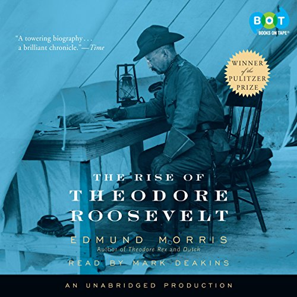
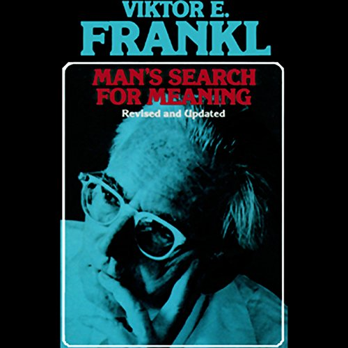

I am a UX Designer in Seattle
“Convergence was the term we used to describe the final phase of making an Apple product, after the features had been locked down and the programming and design teams spent the last three or four months fixing bugs and polishing details.” ― Ken Kocienda, Creative Selection: Inside Apple's Design Process During the Golden Age of Steve Jobs
The Rise of Theodore Roosevelt
Man's Search for Meaning
Chaos